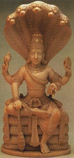

Шеша (санскрит Cesha) або Шеша-нага (Cesha-naga = змія Шеша) - в індійській пізнішій міфології ім'я надзвичайною світової величезної Тисячоголової змії, що утворює своїми незліченними кільцями ложе, на якому спочиває Вішну в проміжках між періодами створення світу або протягом так званої ночі Брахми. Тисяча голів Шеши утворюють над головою бога подобу балдахіна, погрожуючи смертю кожному, хто наважився б потривожити його спокій. За деякими джерелами, Шеша служить також опорою для восьми слонів, що підтримують мир і охороняють вісім головних напрямків компаса.
За іншими, вона підтримує також сім Патала, або підземних пекельних сфер. Втім, індійські астрономічні трактати (так звані сіддханти) стверджують, що земля нічим не підтримується. Коли Шеша позіхає, відбуваються землетруси. В кінці кожної кальпи, або світового періоду, вона викидає отруйний вогонь, що знищує все існуюче. Так як Шеша нерідко ототожнюється з іншого величезної міфічної змією Васуки, що грає роль в міфі про пахтаньем богами світового океану, то і цей міф нерідко приурочується до образу Шеша, взагалі грає видну роль в різних легендах вішнуїтів.
Пурани називають Шеша сином мудреця Кашья і його дружини Кадру, дочки Дакши, а за деякими легендами, Шеша є втілення Баларами, в свою чергу, одного з другорядних втілень Вішну. Коли Баларама помер, то Шеша вийшла з його рота. Зображується Шеша одягненої в пурпур, з білим намистом на шиї, з сохою або плугом (атрибут Баларами) в одній руці і товкачем в інший. Як символ вічності, Шеша називається також Ананта, тобто нескінченна, а дружина Шеши - Ананта-Ширшов (тобто голова Ананта). У сучасних індусів Шеша є царем всіх змій. Міф про Шеше, очевидно, знаходиться в зв'язку з великою кількістю змій в Індії.
Шеша або Васуки, в індуїстської міфології Тисячоголова змій, який підтримував землю і служив ложем для Вішну, коли той спав в інтервалах між творіннями світу. В кінці кожної кальпи, яка дорівнює "дня-і-ночі" Брахми, або 8 640 000 000 людських років, Шеша вивергав отруйний вогонь, що знищує всесвіт.
У міфі про пахтанье океану боги за допомогою Шеши вирвали з землі гору Мандару, а потім використовували її немов мутовку, обмотавши навколо неї Шешу як мотузки. Шешу також шанували як царя змій-нагов і зображували його в пурпуровому одязі, з білим намистом навколо шиї, в одній руці тримає мутовку, а в іншій - плуг. За народними повір'ями землетрусу викликаються позіханням Шеши.